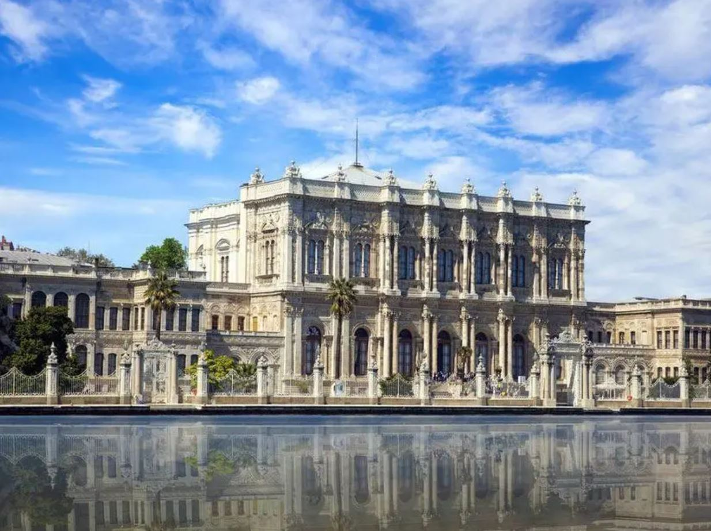

Dolmabahçe Sarayı
Dolmabahçe Sarayı Hakkında
Dolmabahçe Sarayı Hakkında
Dolmabahçe Sarayı'nın bugün bulunduğu alan, bundan dört yüzyıl öncesine kadar Osmanlı Kaptan-ı Derya'sının gemileri demirlediği, Boğaziçi'nin büyük bir koyu idi. Geleneksel denizcilik törenlerinin yapıldığı bu koy zamanla bir bataklık hâline geldi. 17. yüzyılda doldurulmaya başlanan koy,[3] padişahların dinlenme ve eğlenceleri için düzenlenen bir "hasbahçe"ye (hadayik-hassâ) dönüştürüldü. Bu bahçede çeşitli dönemlerde yapılan köşkler ve kasırlar topluluğu, uzun süre "Beşiktaş Sahil Sarayı" adıyla anıldı.
Dolmabahçe'nin yapım emrini veren ve ilk kullanan padişah Sultan Abdülmecid
18. yüzyılın ikinci yarısına doğru, Türk mimarisinde Batı tesirleri görülmeye başlanmış ve "Türk Rokokosu" denilen süsleme şekli, gene Batı tesiri altında kalarak yapılan neobarok tarzı köşk, kasır ve sebillerde kendini göstermeye başlamıştır. Sultan III. Selim, Boğaziçi'nde Batı tarzında ilk binaları inşa ettiren padişahtır. Mimar Antoine Ignace Melling'e Beşiktaş Sarayı'nda bir kasır yaptırmış, lüzum gördüğü diğer yapıları da genişlettirmiştir. Sultan II. Mahmut, Topkapı Sahilsarayı'ndan başka, Beylerbeyi ve Çırağan bahçelerinde Batı tarzında iki büyük saray yaptırmıştır. Bu devirlerde Yeni Saray (Topkapı Sarayı) fiilen olmasa bile, terk edilmiş sayılırdı. Beylerbeyi'ndeki saray, Ortaköy'deki mermer sütunlu Çırağan, eski Beşiktaş Sarayı ile Dolmabahçe'deki kasırlar II. Mahmut'un mevsimlere göre değişen ikametgâhlarıydı. Sultan Abdülmecid de babası gibi "Yeni Saray"a fazla itibar etmemekteydi, orada yalnızca kış mevsiminde birkaç ay kalıyordu. Kırkı aşkın çocuğunun neredeyse tamamı Boğaziçi saraylarında dünyaya gelmiştir.
Sarayın, İstanbul Boğazı'na olan cephesi
2007 yılında Dolmabahçe Sarayı
Sultan Abdülmecid, eski Beşiktaş Sarayı'nda bir süre oturduktan sonra, şimdiye kadar tercih edilen klasik saraylar yerine, ikamet, sayfiye, misafir kabul ve ağırlama, devlet işlerini yürütme amacıyla, Avrupâî plan ve üslupta bir sarayın inşâ edilmesine karar verdi.[4] Abdülmecid, diğer şehzadeler gibi iyi bir eğitim görmemesine rağmen, modern fikirlere sahip bir idâreciydi. Batı müziğini ve Batı üslubuyla yaşamayı seven padişah, anlaşabilecek kadar da Fransızca biliyordu. Sarayı yaptırırken, "Kötülük ve çirkinlikler burada yasaktır, burada sadece güzel olan şeyler bulunsun." dediği rivâyet edilir.
Günümüzdeki Dolmabahçe Sarayı'nın yerinde bulunan köşklerin yıkımına, 200 yıl kadar önce denizden kazanılmış toprağın tekrar ortaya çıkarılması için kesin olarak hangi tarihte başladığına dâir bir bilgi yoktur. 1842'de eski sarayın hâlâ yerinde olduğu ve bu tarihten sonra yeni sarayın inşâsına başlandığı tahmin edilmektedir.[5] Bununla birlikte bu tarihlerde inşaat arazisinin genişletilmesi için çevredeki tarla ve mezarlıkların satın alınarak istimlak edildiği belirtilir. İnşaatın tamamlanma tarihi Hakkında çeşitli kaynaklar değişik tarihler vermektedir. Ancak, 1853 yılı sonunda sarayı gezen Fransız bir ziyaretçinin anlattıklarından, sarayın hâlen süslemelerinin yapılmakta olduğunu, mobilyaların ise henüz yerleştirilmemiş olduğunu öğrenmekteyiz.[6]
Mabeyin Dairesi önündeki Has Bahçe'de yer alan havuz
Sultan Abdülmecid tarafından yaptırılan Dolmabahçe Sarayı'nın cephesi, İstanbul Boğazı'nın Avrupa kıyısında 600 metre boyunca uzanmaktadır. Avrupa mimarî üsluplarının karışımı olan eklektik bir uslûpta, Ermeni mimarlar Garabet Amira Balyan ve oğlu Nigoğos Balyan tarafından 1843-1855 yılları arasında inşâ edilmiştir. 1855 yılında tamamıyla bitirilen[1] Dolmabahçe Sarayı'nın açılış töreni Rus İmparatorluğu ile 30 Mart 1856'da imzalanan Paris Antlaşması'ndan sonra olmuştur.[7] Hicrî 7 Şevval 1272, milâdî 11 Haziran 1856 tarihli Ceride-î Havâdis gazetesinde, sarayın 7 Haziran 1856'da resmen açıldığı haberi verilmiştir.[8]
Sultan Abdülmecid döneminde üç milyon kese altın tutan sarayın mâliyeti, Mâliye Hazinesi'ne aktarılınca, zor durumda kalan maliye, aylıkları, ay başı yerine ay ortalarında, sonraları da 3-4 ayda bir ödemek durumunda kalmıştır.[9] Sultan Abdülmecid, 5.000.000 altına mâl olan Dolmabahçe Sarayı'nda sadece 5 yıl yaşayabilmiştir.[10]
Osmanlı Imparatorluğu'nu ekonomik anlamda tam bir iflas hâlinde devralan Sultan Abdülaziz devrinde 5.320 kişinin hizmet verdiği sarayın yıllık masrafı 2.000.000 sterlini bulmaktaydı. Sultan Abdülaziz, kardeşi Sultan Abdülmecid kadar Batı hayranı değildi. Mütevâzı bir hayat tarzını tercih eden padişahın pehlivan güreşleri ile horoz dövüşlerine merakı vardı.